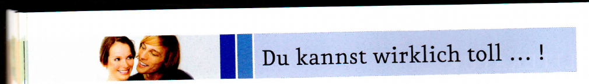
WÖRTER / STRUKTUREN
dukannstwirklichsehrguttanzenkönntihrschwimmenichkannnichttennisspielenkönnendeinekinderschachspielendukannstsuperfußballspielenkannmariagutkochensiekannsehrgutsingen
Beispiel: Könnt ihr gut schwimmen?
BASISTRAINING · LEKTION 7
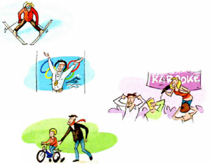
a Sie kann Ski fahren.
b Er kann schwimmen. (individuell)
c Sie kann singen.
d Er kann Rad fahren.
Rolli2000Und was machst du so in der Freizeit?
sugar-333Ich spiele gern Fußball.
Rolli2000Wirklich? Aber du bist doch eine Frau? Oder??? 😉
sugar-333Na klar! Frauen können auch Fußball spielen, oder?
BASISTRAINING · LEKTION 7
Wir haben Jugendliche gefragt: Was ist dein Lieblingshobby?
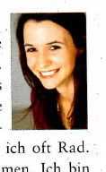
„Ich mache gern Ausflüge in die Berge. Frische Luft, die Natur … da geht es mir einfach gut! Das finde ich schön. Fast immer treffe ich Freunde und wir gehen zusammen wandern. Im Sommer fahre ich oft Rad. An einen See oder so … schwimmen. Ich bin gern draußen."
Jule
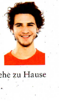
„Ich bin einfach auch gern mal alleine. Ich höre Musik oder ich lese ein Buch. Oder ich schaue Filme. Das macht mir auch total viel Spaß. Ich bin ein Filmfreak. Ich gehe auch sehr oft ins Kino oder sehe zu Hause eine DVD. Oft auch mit Freunden."
Peter
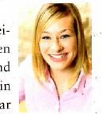
„Meine Freundin und ich sind in einem Chor. Ich singe für mein Leben gern. Ich spiele auch Gitarre und höre sowieso sehr viel Musik. Ein Leben ohne Musik – das geht gar nicht!"
Lisa
„Singen, malen, Schach spielen – das ist alles nichts für mich! Ich mache unglaublich viel Sport. Ich fahre im Winter Ski. Im Sommer fahre ich viel Rad, jogge pro Tag eine Stunde. Zweimal pro Woche spiele ich Fußball in einem Verein. Im Urlaub gehe ich surfen oder schwimmen."
Leon
a Was passt am besten zu wem? Kreuzen Sie an.
| Musik | Natur | Sport | Filme | |
|---|---|---|---|---|
| Jule | ||||
| Peter | ||||
| Lisa | ||||
| Leon |
b Kreuzen Sie an: richtig oder falsch?
| r | f | |
|---|---|---|
| 1 Jule geht gern in den Bergen wandern. | ||
| 2 Peter sieht immer alleine Filme. | ||
| 3 Lisa macht viel Musik und hört fast nie Musik. | ||
| 4 Leon macht fast nie Sport. |
● Gehen wir heute Abend ins Kino? Hast du Lust?
Positiv
Negativ
TRAINING: SCHREIBEN · LEKTION 7
a Markieren Sie die Fragen von Lisa.
Hallo liebe Studentinnen und Studenten der Uni Freiburg und Straßburg, ich heiße Lisa und organisiere das Freizeitprogramm beim Sommercamp in Straßburg. Ich möchte Euch fragen: Wie alt seid ihr? Woher kommt ihr und welche Sprachen sprecht ihr? Was macht ihr gern in der Freizeit? Welche Hobbys habt ihr? Bitte schreibt mir kurz eine E-Mail. Ich freue mich sehr auf das Sommercamp mit Euch! Wir haben bestimmt viel Spaß zusammen! Bis bald! Viele Grüße Lisa
b Machen Sie Notizen für Ihre Antwort an Lisa. Arbeiten Sie auch mit dem Wörterbuch.
| Alter: | Herkunft: | Sprachen: | Freizeit: | Hobbys: |
c Schreiben Sie nun eine E-Mail an Lisa.
Mein Name ist und ich bin Jahre alt. Ich komme . Ich spreche . In der Freizeit . Ich freue mich auch sehr auf das Sommercamp! Viele Grüße
TRAINING: AUSSPRACHE · Wandernder Satzakzent
Spielen · Schach spielen · Ich kann Schach spielen. · Ich kann gut Schach spielen. · Ich kann sehr gut Schach spielen.
a ■ Was machst du in der Freizeit? ▲ Ich höre gern Musik.
b ■ Hörst du gern Musik? ▲ Oh ja. Ich liebe Musik.
c ■ Singst du gern? ▲ Oh ja. Singen macht Spaß! ■ Und kannst du auch singen? ▲ Natürlich kann ich singen! Hör zu: …
Hören Sie noch einmal und sprechen Sie nach.
TEST · LEKTION 7 Wörter 10 · Strukturen 8 · Kommunikation 6
| Mo | Di | Mi | Do | Fr |
|---|---|---|---|---|
| Fußball spielen, im Internet surfen | Fußball spielen | im Internet surfen | Fußball spielen | ins Kino gehen |
| 😟 | 😐 | 😊 | |
|---|---|---|---|
| Wörter | 0–5 | 6–7 | 8–10 |
| Strukturen | 0–4 | 5–6 | 7–8 |
| Kommunikation | 0–3 | 4 | 5–6 |
www.hueber.de/menschen/lernen
LERNWORTSCHATZ · LEKTION 7
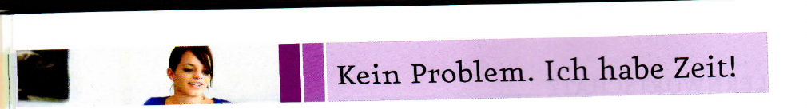
WÖRTER / STRUKTUREN
a Markieren Sie die Wörter.
LFEMPSCHWIMMBADLDHTPCBSMUSEUMVÜWBFRCAFÉLZMSGWBORESTAURANT
LCGWVTKINONFAKFUEDISCOKTJWGKONZERTBWOVPTHEATERMKVJESBARLFJRBN
BELEI Judith, gehen wir heute MITCHANGTA ins NOKI? Klaus
LOHAL Klaus, ich habe DIELER keine TIZE. Liebe Grüße Judith
Hallo Clara, ich kann heute nicht in die Aurora-Bar kommen. Ich habe leider noch einen Termin mit meiner Chefin. Das tut mir sehr leid! Ich habe am Wochenende Zeit. Du auch? Viele Grüße Tina
Hi Elias, ich gehe heute Nachmittag ins Schwimmbad. Kommst du mit? Grüße Simon
BASISTRAINING · LEKTION 8
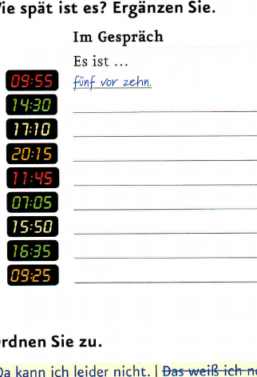
| Deutsch | Englisch | Meine Sprache oder andere Sprachen |
|---|---|---|
| Monday | ||
| Tuesday | ||
| Wednesday | ||
| Thursday | ||
| Friday | ||
| Saturday | ||
| Sunday |
BASISTRAINING · LEKTION 8
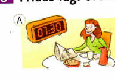
A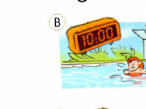
B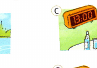
C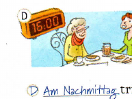
D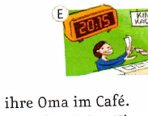
E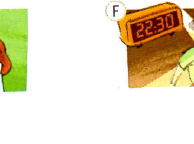
F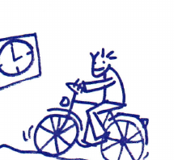
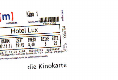
a Wo sind Lukas und Susanna? Kreuzen Sie an.
b Hören Sie noch einmal. Was ist richtig? Kreuzen Sie an.
1 Lukas hat zwei .
2 Susanna geht ins Theater.
3 Lukas hat zwei Karten für .
4 Susanna geht am Samstag ins Kino.
5 Sie treffen sich in der Bar im Stadttheater.
TRAINING: LESEN · LEKTION 8
a Markieren Sie: Was? Wann? b Welche Anzeige passt? Kreuzen Sie an.
A Sie suchen Freunde für Freizeitaktivitäten am Wochenende.
B Sie sind Studentin und suchen einen Job im Büro.
A → · B →
TRAINING: AUSSPRACHE · Unbetontes „e"
Morgen – Abend – Essen – Viertel – sieben – Museum – gehen
Hören Sie noch einmal. Wo hören Sie das „e"? Kreuzen Sie an.
In betonten Silben (Museum) hört man das „e" gut.
In nicht betonten Silben (Viertel) hört man das „e" gut.
a ▲ Gehen wir morgen Abend essen? ■ Wann? ▲ Um Viertel vor sieben. ■ Gute Idee.
b ▲ Wie spät ist es? ■ Viertel vor zehn. Warum? ▲ Dann können wir ins Museum gehen. Um zehn! ■ Ach nein. Keine Lust.
Hören Sie noch einmal und sprechen Sie nach.
TEST · LEKTION 8
„Hallo Marion, wir haben leider keine Zeit. Thomas spielt heute Vormittag Tennis. Ich treffe um 14 Uhr Anna. Wir gehen am Abend ins Kino. Können wir vielleicht am Sonntag fahren?"
| 😟 | 😐 | 😊 | |
|---|---|---|---|
| Wörter | 0–7 | 8–11 | 12–14 |
| Strukturen | 0–4 | 5–6 | 7–8 |
| Kommunikation | 0–2 | 3 | 4–5 |
LERNWORTSCHATZ · LEKTION 8
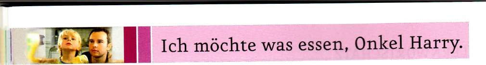
WÖRTER / STRUKTUREN
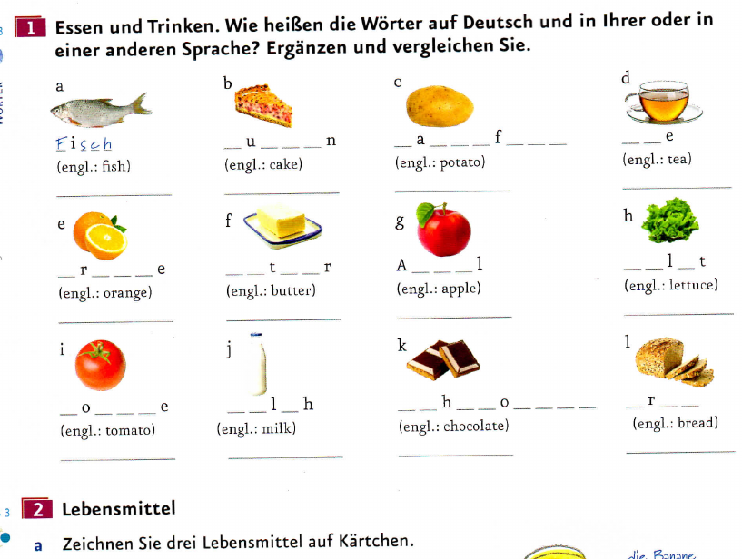
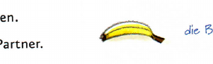
„Was isst und trinkst du gern zum Frühstück?" — Jan Weißmüller
Brötchen ☺ · Eier ☹ · Käse ☺ · Wurst ☹ · Schinken ☹ · Tee ☺ · Kaffee ☺ · Müsli ☺ · Milch ☹ · Tomaten ☺ · Kuchen ☺ · Obst ☺ · Salat ☹
BASISTRAINING · LEKTION 9
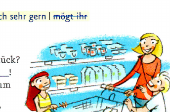
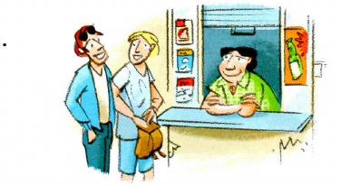
a Guten Appetit!
b Mögen Sie Fisch?
c Möchten Sie noch etwas Kuchen?
d Wie schmeckt die Suppe?
BASISTRAINING · LEKTION 9
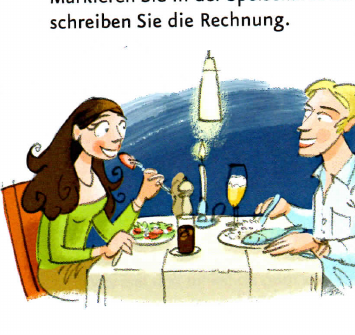
a Ordnen Sie zu.
TRAINING: SPRECHEN · LEKTION 9
a Suchen Sie Wörter.
b Finden Sie Fragen.
Was trinkst du immer zum Frühstück? · Isst / Trinkst du gern …? · Magst du …? · Was ist dein Lieblingsessen?
■ Trinkst du gern Tee?
▲ Ja, oft.
▲ Was isst du gern zum Frühstück?
■ Ich frühstücke nur am Wochenende. Ich …
TRAINING: AUSSPRACHE · Wortakzent bei Komposita
a Kartoffel – Salat – Kartoffelsalat · b Käse – Brötchen – Käsebrötchen · c Zwiebel – Suppe – Zwiebelsuppe · d Obst – Kuchen – Obstkuchen · e Zitrone – Eis – Zitroneneis
Hören Sie noch einmal und sprechen Sie nach.
TEST · LEKTION 9
a Möchten Sie ein Eis?
b Guten Appetit!
c Hier ist die Suppe. Möchten Sie auch einen Salat?
d Frühstücken wir zusammen?
e Magst du Fisch?
— /5 Punkte
| 😟 | 😐 | 😊 | |
|---|---|---|---|
| Wörter | 0–4 | 5–6 | 7–8 |
| Strukturen | 0–6 | 7–10 | 11–13 |
| Kommunikation | 0–2 | 3 | 4–5 |
LERNWORTSCHATZ · LEKTION 9
WIEDERHOLUNGSSTATION · WORTSCHATZ
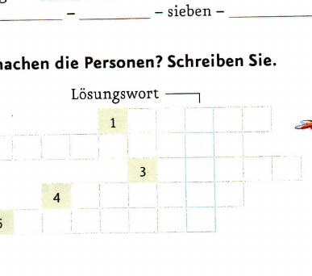
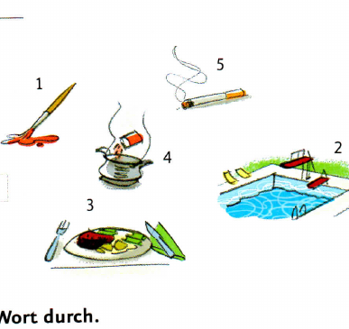
a
b
c
d
WIEDERHOLUNGSSTATION · GRAMMATIK
| MO | DI | MI | DO | FR | SA | SO |
|---|---|---|---|---|---|---|
| 20:30 Kino mit Jan | Mittag: Essen mit Peter | Abend: Treffen Juliane | 10:30 Mail schreiben | 17:00 Tennis mit Ben | 11:00 Rad fahren mit Susi | lange schlafen ☺ Abend: DVD sehen |
SELBSTEINSCHÄTZUNG
▲ Was sind deine Hobbys? ■ Meine Hobbys sind und . ● Was machst du in der Freizeit? ▼ Ich gern.
▲ Kann ich ? ■ ☺ ☹
▲ Zeit? ■ ☺ Ja, ☹ Nein, 😐
▲ wir ? ■ ☺ Gute . ☹ Tut . Ich .
kann ich nicht kommen. / . Ich habe keine Zeit.
▲ du gern zum Frühstück? ■ Ich . Und du? ▲ .
Das mache ich gern: · Das mache ich nicht so gern:
Ich gehe gern ins / in eine / in einen: · Ich gehe nicht so gern ins / in eine / in einen:
Das esse / trinke ich gern: · Das esse / trinke ich nicht so gern:
Üben / Wiederholen möchte ich noch:
RÜCKBLICK
🔍 Freizeit
a Notieren Sie Aktivitäten. Hilfe finden Sie im Kursbuch auf den Seiten 42 und 43.
b Schreiben Sie Sätze. Was können Sie gut? Was können Sie nicht so gut?
Das kann ich gut:
Das kann ich nicht so gut:
✏️ Wählen Sie eine Person. Was kann die Person gut / nicht so gut? Schreiben Sie einen kleinen Text.
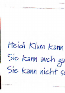
„Heidi Klum kann gut singen. Sie kann auch gut kochen. Sie kann nicht so gut …"
RÜCKBLICK
🔍 Lesen Sie noch einmal den Kalender im Kursbuch auf Seite 89 oder 93. Wählen Sie einen Wochentag aus. Was macht die Person an diesem Tag? Schreiben Sie.
Sie / Er geht am Mittwoch … Um … Uhr …
✏️ Ein perfektes Wochenende. Füllen Sie den Kalender aus und schreiben Sie.
| SAMSTAG | SONNTAG |
|---|---|
🔍 Ein Frühstück für vier Personen: Was brauchen Sie? Sehen Sie im Kursbuch auf den Seiten 50 und 51 nach. Schreiben Sie einen Einkaufszettel.
✏️ Mein Lieblingsmenü. Machen Sie eine Speisekarte.
| Vorspeise | |
| Hauptspeise | |
| Nachspeise |
LITERATUR
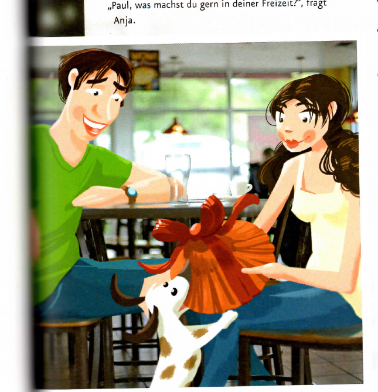
Paul und Anja sitzen im Restaurant. Sie lesen die Speisekarte. „Was möchtest du essen, Paul?", fragt Anja. „Ich weiß nicht … was isst man in München?" „Hmm … Schweinebraten ist sehr gut." „Dann esse ich Schweinebraten", sagt Paul. „Und du?" „Ich habe nicht so viel Hunger. Ich esse nur eine Suppe."
Der Kellner kommt. „Ich möchte gerne eine Zwiebelsuppe", sagt Anja. „Und ich einen Schweinebraten … und eine Cola", sagt Paul. „Ja, für mich auch."
Herr Rossmann bellt. „Ja, ich weiß, du möchtest auch etwas essen. Aber du bekommst erst später etwas. Tut mir leid!", sagt Paul.
Der Kellner kommt bald mit den Getränken. „Paul, was machst du gern in deiner Freizeit?", fragt Anja. „Hmm … Ich treffe gerne Freunde, ich höre Musik, ich lese, ich gehe surfen …" Herr Rossmann bellt. „Ja, natürlich, und ich gehe mit Herrn Rossmann spazieren." Herr Rossmann bellt. „Ich gehe sehr oft mit Herrn Rossmann spazieren. Und was machst du gern?"
Da kommt der Kellner mit dem Essen. „Guten Appetit", sagt er. Paul und Anja essen. „Der Schweinebraten ist sehr gut", sagt Paul. „Wie schmeckt die Suppe?" „Auch gut."
„Also, was sind deine Hobbys?" fragt Paul. „Ich lese gern und höre Musik. Am Abend gehe ich manchmal in die Disco …" „Oh ja, Tanzen finde ich auch gut. Gehen wir nach dem Essen noch in die Disco?" „Super Idee! … Aber … ich kann heute Abend leider nicht. Ich habe morgen um 7:30 Uhr einen Termin. Hast du morgen Abend Zeit?" „Ja, morgen ist auch gut."
Der Kellner kommt wieder. Er fragt: „Möchten Sie noch ein Dessert? Oder einen Kaffee?" „Ich nehme einen Espresso", sagt Anja. „Und einen Apfelkuchen." „Ich möchte keinen Kaffee, danke", sagt Paul. „Haben Sie Schokoladenkuchen?" „Ja, natürlich." „Dann ein großes Stück Schokoladenkuchen, bitte!"
Herr Rossmann bellt. „Ja, Herr Rossmann?" Herr Rossmann bellt. „Ach, wir haben ja noch etwas für Anja", sagt Paul. „Was denn?" Herr Rossmann bringt ein Päckchen zu Anja. Sie öffnet es. „Oh … ein Hut … Er ist sehr schön. Danke!" „Du musst ihn gleich aufsetzen!"
Herr Rossmann bellt. Er hat eine tolle Sonnenbrille und Anja hat jetzt auch einen tollen neuen Hut. Das ist gut, findet er.